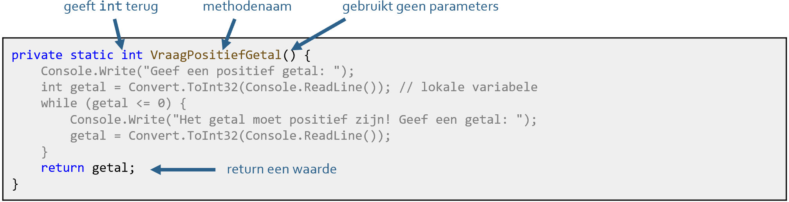
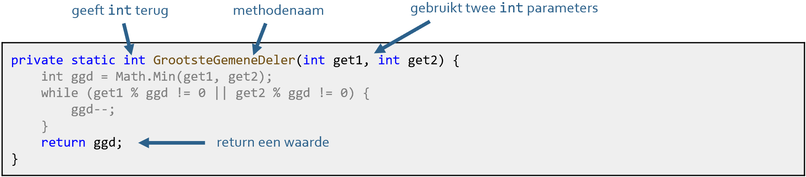

Op Youtube
Deze video maakt deel uit van de IIP playlist van de Youtube channel van Rogier van der Linde.
Let op: deze video's zijn al een paar jaar oud, dus hier en daar kunnen kleine afwijkingen voorkomen met deze cursus, die wel altijd up-to-date is.
- 0:00 Intro
- 1:26 reeds gekende methodes
- 5:48 Wpf voorbeeld: UpdateUI()
- 10:14 Console voorbeeld: LeesPositiefGetal(), IsPriem()
- 20:58 hergebruik IsPriem() in WPF toepassing
- 26:06 methodes zonder return (met/zonder parameters): UpdateUI(), DrukMenu(), DrukKerstboom()
- 31:39 methodes met return (met/zonder parameters): VraagPositiefGetal(), GrootsteGemeneDeler()
- 34:19 pure methodes
- 45:31 voordelen van methodes
Reeds gekende methodes
Methodes gebruiken we eigenlijk nu al. Enkele voorbeelden uit de cursus:
Console.WriteLine("hallo"); // methode WriteLine(): drukt tekst "hallo"
string antwoord = Console.ReadLine(); // methode ReadLine(): leest een tekst
Random rnd = new Random();
int waarde = rnd.Next(1, 20); // methode Next(): genereert een getal tussen 1 en 20
double getal3 = Math.Round(7.214); // methode Round(): rondt een getal af
char karakter = Convert.ToChar("G"); // methode ToChar(): zet een tekst om naar een karakter
string str1 = "aap";
string str2 = "noot";
int vergelijk = str1.CompareTo(str2); // methode CompareTo(): vergelijkt str1 alfabetisch met str2
Console.Clear(); // methode Clear(): wist de console
Naam, parameters, returnwaarde
Enkele vaststellingen:
- alle methodes hebben een naam in PascalCasing, bv. WriteLine, ToChar, Clear…
- sommige methodes gebruiken één of meer argumenten, bv. Next(…, …), ToChar(…)…
andere methodes gebruiken geen argumenten, bv. ReadLine(), Clear() … - sommige methodes geven een waarde terug, bv. ReadLine() geeft een string, Next(…) geeft een int…
andere methodes geven geen waarde terug, bv. WriteLine(), Clear()
Voorbeelden:
| CODEFRAGMENT | METHODENAAM | RETURNTYPE | ARGUMENTEN |
|---|---|---|---|
Console.WriteLine("hallo"); |
WriteLine |
- |
string |
string antwoord = Console.ReadLine(); |
ReadLine |
string |
- |
Random rnd = new Random(); |
Next |
int |
int, int |
double getal3 = Math.Round(7.214); |
Round |
double |
double |
char karakter = Convert.ToChar("G"); |
ToChar |
char |
string |
string str1 = "aap";
|
CompareTo |
int |
string |
Console.Clear(); |
Clear |
- |
- |
Om een methode te kunnen gebruiken, moet je dus de naam kennen, de verwachte parameter(s), en het returntype.
Methodes schrijven
De declaratie van een nieuwe methode bestaat uit de volgende onderdelen:
- zichtbaarheid:
privateofpublic, in deze cursus altijdprivate - return-type:
int,double,string, ...voidindien geen return-waarde - naam: zelfgekozen, in PascalCase
- parameterlijst: parameters met vermelding van type en naam, gescheiden door komma's
- body: instructies tussen
{}, eventueel afgesloten met eenreturn

Algemene syntax:
private returntype MethodeNaam(type1 parameter1, type2 parameter2…)
{
// instructies
// ...
return waarde; // deze regel is optioneel
}
Opmerking: bij console-applicaties moeten methodes steeds voorafgegaan worden door het keyword static
private static int VraagPositiefGetal()
{
// ... methode body hier
}
private static int GrootsteGemeneDeler(int get1, int get2)
{
// ... methode body hier
}
Type 1: geen parameters, geen return — "doen"
Dit zijn eerder domme methodes, die altijd hetzelfde "doen". Voorbeeld van een methode die een keuzemenu afdrukt:
Type 2: met parameters, geen return — "realiseren"
Deze methodes lijken op de vorige, behalve dat wat ze doen afhankelijk is van parameters, ze "realiseren". Voorbeeld van een methode die een kerstboom afdrukt:
Type 3: geen parameters, met return — "genereren"
Dergelijke methodes "genereren". Methode die een getal inleest tot het positief is:

Type 4: met parameters, met return — "berekenen"
Dergelijke methodes accepteren input, en geven een resultaat terug: ze "genereren". Methode die twee gehele getallen vraagt, en de grootste gemene deler teruggeeft:

Parameters vs. argumenten
bij definitie gebruiken we de term parameters, b.v. (get1, get2)
bij aanroep gebruiken we de term argumenten, b.v. (12, 18)
Methodes in praktijk
Voorbeeld 1, console app: grootste gemene deler
Een voorbeeld consoletoepassing die twee getallen inleest, en de grootste gemene deler bepaalt:
class Program
{
// methode om positief getal te vragen
private static int VraagPositiefGetal()
{
Console.Write("Geef een positief getal: ");
int getal = Convert.ToInt32(Console.ReadLine()); // lokale variabele
while (getal <= 0)
{
Console.Write("Het getal moet positief zijn! Geef een getal: ");
getal = Convert.ToInt32(Console.ReadLine());
}
return getal;
}
// methode om grootste gemene deler van twee getallen te bepalen
private static int GrootsteGemeneDeler(int get1, int get2)
{
int ggd = Math.Min(get1, get2);
while (get1 % ggd != 0 || get2 % ggd != 0)
{
ggd--;
}
return ggd;
}
// hoofdprogramma
private static void Main(string[] args)
{
int getal1 = VraagPositiefGetal(); // gebruik methode VraagPositiefGetal
int getal2 = VraagPositiefGetal(); // gebruik opnieuw methode VraagPositiefGetal
Console.Write("De grootste gemene deler is: ");
Console.WriteLine(GrootsteGemeneDeler(getal1, getal2)); // gebruik methode GrootsteGemeneDeler
Console.ReadKey();
}
}
Merk op dat in Console toepassingen methodes altijd worden voorafgegaan door static (uitleg waarom valt buiten deze cursus)
Geef een positief getal: 12 Geef een positief getal: 18 De grootste gemene deler is: 6
Voorbeeld 2, console app: kerstboom
Een voorbeeld consoletoepassing die een hoogte, breedte en optinoeel een karakter inleest, en een kerstboom afdrukt:
class Program
{
// methode om een kerstboom af te drukken met gegeven hoogte, breedte en karakter
private static void DrukKerstboom(int hoogte, int breedte, char c)
{
int i, j, aantalSterren, aantalSpaties; // lokale variabelen
for (i = 1; i < hoogte; i++)
{
aantalSterren = (i * breedte) / hoogte;
aantalSpaties = (breedte - aantalSterren) / 2;
for (j = 0; j < aantalSpaties; j++) Console.Write(" ");
for (j = 0; j < aantalSterren; j++) Console.Write(c);
Console.WriteLine();
}
return;
}
private static void Main(string[] args) {
DrukKerstboom(10, 7, '+');
DrukKerstboom(13, 10, '*');
DrukKerstboom(7, 6, 'O');
}
}
+
++
++
+++
++++
++++
+++++
++++++
*
**
***
***
****
*****
******
******
*******
********
*********
O
OO
OOO
OOOO
OOOOO
Voorbeeld 3, WPF app: grootste gemene deler
Een methode in een WPF app gebruiken is niet zoveel anders dan in een Console app. Drop de methode in je code behind, en je bent klaar om ‘m te gebruiken. Maken we bij wijze van voorbeeld de grootste gemene deler app in WPF:
<TextBox x:Name="txtGetal1" ... />
<Label Content="Getal 1: " ... />
<TextBox x:Name="txtGetal2" ... />
<Label Content="Getal 2: " ... />
<Button x:Name="btnBereken" Content="BEREKEN" Click="BtnBereken_Click" ... />
<Label Content="Berekening grootste gemene deler" ... />
<Label x:Name="lblResultaat" Content="" .../>public partial class MainWindow : Window
{
public MainWindow()
{
InitializeComponent();
}
private int GrootsteGemeneDeler(int get1, int get2)
{
int ggd = Math.Min(get1, get2);
while (get1 % ggd != 0 || get2 % ggd != 0)
{
ggd--;
}
return ggd;
}
private void BtnBereken_Click(object sender, RoutedEventArgs e)
{
int getal1 = Convert.ToInt32(txtGetal1.Text);
int getal2 = Convert.ToInt32(txtGetal2.Text);
lblResultaat.Content = $"De grootste gemene deler is {GrootsteGemeneDeler(getal1, getal2)}";
}
}Call by reference / value
Dit gaat over de vraag: wat gebeurt er als een methode de waarde van een binnenkomende parameter verandert?
-
Call by value: de variabele geeft enkel zijn waarde door, wijzigingen gaan verloren
Geldt voor: alle primitieve types (bool,char,int,double...) enstring(*) -
Call by reference: de variabele geeft zijn referentie door; wijzigingen blijven behouden
Geldt voor: al de rest (objecten, arrays, lijsten…)
De voorbeelden verder maken gebruik van arrays dat in het volgende deel aan bod komt, dus misschien wil je dat deel eerst bestuderen en dan naar hier terugkeren.
Call by value voorbeeld
Als je bv. een int meegeeft met een methode, dan blijven wijzigingen door die methode niet behouden:
static void Verdubbel(int get)
{
get *= 2;
}
int getal1 = 12;
Console.WriteLine($"Getal is {getal1}"); // getal1 is 12
Verdubbel(getal1);
Console.WriteLine($"Getal is {getal1}"); // getal1 is nog steeds 12; wijzigingen gaan verloren!Call by reference voorbeeld
Geef je daarentegen een array mee, dan blijven wijzigingen door die methode wel behouden:
static void Verdubbel(int[] getallenrij)
{
for (int i = 0; i < getallenrij.Length; i++)
{
getallenrij[i] *= 2;
}
}
int[] getallen = { 1, 3, 7, 8 };
Console.WriteLine($"Getallen zijn {string.Join(", ", getallen)}"); // 1, 3, 7, 8
Verdubbel(getallen);
Console.WriteLine($"Getallen zijn {string.Join(", ", getallen)}"); // veranderd naar 2, 6, 14, 16
ref en out
Wil je primitieve types of strings toch veranderen in een methode, dan kan dat met de sleutelwoorden
out of ref. Een voorbeeld voor ref:
static void Verdubbel(ref int get)
{
get *= 2;
}
int getal1 = 12;
Console.WriteLine($"Getal is {getal1}"); // getal1 is 12
Verdubbel(ref getal1);
Console.WriteLine($"Getal is {getal1}"); // getal1 is 24; wijzigingen blijven behouden!intis nu called by reference!- het verschil tussen
outenrefis klein (bijoutmoet je de waarde veranderen in de methode, bijrefmag je de waarde veranderen)
Gevorderde programmeurs kunnen ongetwijfeld voordelen halen door value types te veranderen naar reference,
maar het gebruik van ref of out is sterk afgeraden voor beginnende programmeurs.
Het bovenstaand voorbeeld kan je beter herschrijven met een eenvoudige return:
static int Verdubbel(int get)
{
int verdubbeld = get * 2;
return verdubbeld;
}
int getal1 = 12;
Console.WriteLine($"Getal is {getal1}"); // getal1 is 12
getal1 = Verdubbel(getal1);
Console.WriteLine($"Getal is {getal1}"); // getal1 is 24; wijzigingen doorgegeven via returnVeelgemaakte fouten
Fout 1: verwarring parameters met argumenten
Parameters zijn onbekenden die je gebruikt bij de definitie van de methode, argumenten zijn de waarden die je meegeeft bij het uitvoeren van de methode (letterlijke waarden of via variabelen).
static void Main(string[] args)
{
int lengte = 5;
int breedte = 10;
int hoogte = 7;
double volume1 = BerekenVolume(lengte, breedte, hoogte); // argumenten: lengte, breedte, hoogte
double volume2 = BerekenVolume(8, 16, 3); // argumenten: 8, 16, 3
}
static double BerekenVolume(int l, int b, int h) // parameters: l, b, h
{
double volume = l * b * h;
return volume;
}
geef je parameters voor de duidelijkheid andere namen dan de andere variabelen
Fout 2: parameters waarden geven
De waarden van de parameters van een methode worden meegegeven door de code die deze methode aanroept. Het is dus NIET de bedoeling dat je deze waarden binnen de methode opnieuw instelt:
static double BerekenBMI(double gewicht, double lengte)
{
Console.Write("Gewicht: ");
gewicht = Convert.ToDouble(Console.ReadLine()); // FOUT! waarde gewicht meegegeven bij methode oproep
Console.Write("Lengte: ");
lengte = Convert.ToDouble(Console.ReadLine()); // FOUT! waarde lengte meegegeven bij methode oproep
return gewicht / (lengte * lengte);
}
Fout 3: parameters van waarde veranderen
Een andere klassieke fout is het gebruiken van parameters in een berekening:
static double CelsiusNaarFahrenheit(double celsius)
{
celsius = celsius * 1.8 + 32; // niet ok: verander binnenkomende parameters niet van waarde
return celsius;
}De juiste implementatie:
static double CelsiusNaarFahrenheit(double celsius)
{
int farenheit = celsius * 1.8 + 32; // ok: gebruik extra variabele
return farenheit;
}
Pure methodes
Een pure methode is een methode die volledig onafhankelijk van de buitenwereld opereert.
Het leest of schrijft dus niks extern: geen globale variabelen, externe bronnen, WPF controls...
Dit betekent:
- je kan ze in elke context gebruiken (WPF toepassing, Console app, ...)
- bij dezelfde input (parameters) krijg je altijd dezelfde output (returnwaarde).
- alle communicatie met de buitenwereld gebeurt via parameters en return
Belangrijkste regels:
- lees of schrijf geen globale variabelen
- lees of schrijf geen externe bronnen als bestanden, databanken, API's...
- lees of schrijf niet naar de Console (
Console.ReadLine(),Console.ReadKey(),Console.Write(...),Console.WriteLine(...), ...) - lees of schrijf geen WPF controls (TextBox tekst, Slider waarde...)
En als je het helemaal correct wil doen:
- maak geen gebruik van de Random klasse (anders is de output niet voorspelbaar)
- maak geen gebruik van omgevingsspecifieke klassen als BitmapImage, MessageBox... (werken b.v. niet in de Console)
Pure methodes is een erg belangrijk concept in programmeren, belangrijk voor o.a. compiler optimalisatie, code libraries, herbruikbaarheid...
Voorbeeld 1: puur dankzij returnwaarde
Een methode DrukKerstboom(), niet puur:
private static void DrukKerstboom(int hoogte, int breedte, char c)
{
int i, j, aantalSterren, aantalSpaties; // lokale variabelen
for (i = 0; i < hoogte; i++)
{
aantalSterren = (i * breedte) / hoogte;
aantalSpaties = (breedte - aantalSterren) / 2;
for (j = 0; j < aantalSpaties; j++) Console.Write(" "); // FOUT! vermijd schrijven naar de console
for (j = 0; j < aantalSterren; j++) Console.Write(c); // FOUT! vermijd schrijven naar de console
Console.WriteLine(); // FOUT! vermijd schrijven naar de console
}
return;
}
private static void Main(string[] args) {
DrukKerstboom(20, 15, '+');
}
Hetzelfde programma, nu wel met pure methode:
private static string GeefKerstboom(int hoogte, int breedte, char c)
{
string str = "";
int i, j, aantalSterren, aantalSpaties;
for (i = 0; i < hoogte; i++)
{
aantalSterren = (i * breedte) / hoogte;
aantalSpaties = (breedte - aantalSterren) / 2;
for (j = 0; j < aantalSpaties; j++) str += " ";
for (j = 0; j < aantalSterren; j++) str += c;
str += Environment.NewLine;
}
return str; // OK: geef een string terug
}
private static void Main(string[] args)
{
string kerstboom = GeefKerstboom(20, 15, '+');
Console.WriteLine(kerstboom);
}Voorbeeld 2: puur dankzij parameters
De eerdere methode GrootsteGemeneDeler(), niet puur:
private static int GrootsteGemeneDeler()
{
Console.Write("Geef het eerste getal: "); // FOUT! vermijd lezen van de Console
int get1 = Convert.ToInt32(Console.ReadLine()); // FOUT! vermijd schrijven naar de Console
Console.Write("Geef het tweede getal: "); // FOUT! vermijd lezen van de Console
int get2 = Convert.ToInt32(Console.ReadLine()); // FOUT! vermijd schrijven naar de Console
int ggd = Math.Min(get1, get2);
while (get1 % ggd != 0 || get2 % ggd != 0)
{
ggd--;
}
return ggd;
}
private static void Main(string[] args)
{
int grootsteGD = GrootsteGemeneDeler();
Console.WriteLine($"de grootste gemene deler is {grootsteGD}");
}
Geef het eerste getal: 18 Geef het tweede getal: 12 De grootste gemene deler is 6
Hetzelfde programma, nu wel met pure methode:
private static int GrootsteGemeneDeler(int get1, int get2) // OK: gebruik parameters
{
int ggd = Math.Min(get1, get2);
while (get1 % ggd != 0 || get2 % ggd != 0)
{
ggd--;
}
return ggd;
}
private static void Main(string[] args)
{
Console.Write("Geef het eerste getal: ");
int getal1 = Convert.ToInt32(Console.ReadLine());
Console.Write("Geef het tweede getal: ");
int getal2 = Convert.ToInt32(Console.ReadLine());
int grootsteGD = GrootsteGemeneDeler(getal1, getal2);
Console.WriteLine($"de grootste gemene deler is {grootsteGD}");
}
Optionele parameters
Je kan standaardwaarden opgeven voor parameters; je kan het argument dan al dan niet weglaten. Een voorbeeld:
Een tweede iets uitgebreider voorbeeld met achteraan drie optionele parameters (merk op: optionele parameters moeten achteraan de parameterlijst staan):
private static string OrderDetails(string verkoper, string product, decimal prijs, string klant = null, int aantal = 1, int kortingPerc = 0)
{
return $@"
Verkoper: {verkoper}
Klant: {(klant == null ? "(onbekend)" : klant)}
Verkoop: {aantal} x {product}
Korting: {(kortingPerc == 0 ? "geen" : kortingPerc + "%")}
Te betalen: {Math.Round(prijs * aantal * (100 - kortingPerc) / 100, 2)} euro";
}Als je geen waarde meegeeft bij de method call, wordt de opgegeven standaardwaarde genomen. Volgende method oproep is dus geldig:
Console.WriteLine(OrderDetails("Gift shop", "Red Mug", 12.5m)); // noot: 12.5m is hoe je een decimal literal noteertVerkoper: Gift shop Klant: (onbekend) Verkoop: 1 x Red Mug Korting: geen Te betalen: 12,5 euro
Andere voorbeelden van geldige calls:
Console.WriteLine(OrderDetails("Gift shop", "Red Mug", 12.5m, "Sara Kazani"));
Console.WriteLine(OrderDetails("Gift shop", "Red Mug", 12.5m, "Sara Kazani", 3));
Console.WriteLine(OrderDetails("Gift shop", "Red Mug", 12.5m, "Sara Kazani", 3, 20));
Named parameters
Je kan bij een methode oproep met optionele parameters alleen argumenten achteraan weglaten, niet middenin. Dit is dus niet geldig (klant en aantal weggelaten):
Console.WriteLine(OrderDetails("Gift shop", "Red Mug", 12.5m, , , 20)); // FOUT!Je kan dit oplossen met named parameters:
Console.WriteLine(OrderDetails(verkoper: "Gift shop", product: "Red Mug", prijs: 12.5m, kortingPerc: 20));Verkoper: Gift shop Klant: (onbekend) Verkoop: 1 x Red Mug Korting: 15% Te betalen: 10,62 euro
- named parameters maken je code ook leesbaarder
Lambda expressies
Lambda expressies zijn verkorte notaties met => voor methodes. Volgende notaties zijn gelijkwaardig:
int Som(int a, int b) => a + b;
int Som(int a, int b)
{
return a + b;
}
Extensie methodes
Extensie methodes zijn methodes waarmee je basisklassen als string en
Array kan uitbreiden. Definieer ze in een aparte statische klasse (voorbeeld voor string input type):
public static class MyStringExtensions
{
// Extension method to count vowels in a string
public static int MyCountVowels(this string input)
{
string[] words = input.ToLower().Split(new char[] { 'a', 'e', 'i', 'o', 'u' }, StringSplitOptions.RemoveEmptyEntries);
return words.Length - 1;
}
// Extension method to encode a string by shifting each character
public static string MyEncode(this string input)
{
string encoded = "";
foreach (char c in input)
{
encoded += Convert.ToChar((int)c + 1);
}
return encoded;
}
}Voorbeelden van gebruik:
string sentence = "This is an example sentence.";
int numVowels = sentence.MyCountVowels();
string encoded = sentence.MyEncode();
int encodedNumVowels = sentence.MyEncode().MyCountVowels(); // chaining example